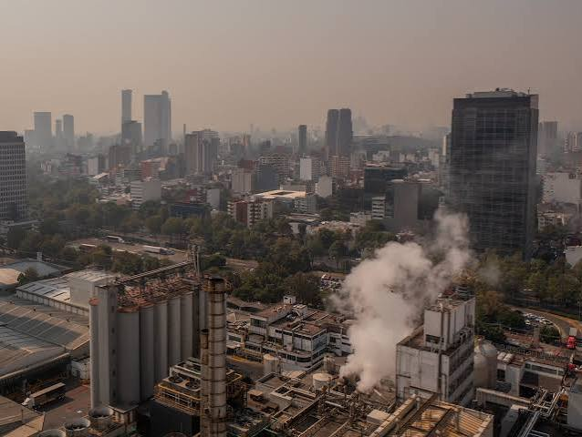

El medio ambiente
Por: Tomado de Internet
Por: Tomado de Internet
La cuenca de México es una región en la que las condiciones ambientales para el desarrollo de una gran ciudad son desfavorables por naturaleza. Con velocidades de viento sumamente bajas, sin la presencia de ríos cercanos, en un área de alto riesgo sísmico y ubicada sobre el lecho lodoso de un antiguo lago, la ciudad de México enfrenta riesgos ambientales de gran magnitud. HISTORIA Y PATRIMONIO CULTURAL La cuenca de México es uno de los pocos lugares del mundo con evidencias arqueológicas e históricas registradas y estudiadas, que abarcan un periodo de cerca de treinta mil años, lo que la convierte en un área de altísimo interés arqueológico, cultural y etnobiológico. Sin embargo, el crecimiento de la ciudad ha provocado la destrucción de una parte importante del patrimonio histórico, arqueológico y cultural, y está provocando la rápida desaparición de la cultura lacustre tradicional. La antigua agricultura chinampera de la cuenca de México, es una de las técnicas agrícolas más eficientes y, ambientalmente, de las más benignas que se conocen, pero está desapareciendo rápidamente frente a la expansión de la mancha urbana. EL PROBLEMA DEMOGRÁFICO El problema de la ciudad de México no es sólo un problema de tamaño, es, sobre todo, un problema de crecimiento. El rápido aumento de la población (4.8% anual), la expansión de la mancha urbana (5.2%) y el aumento del parque automotriz (6%), hace muy difícil abastecer de servicios a la ciudad, y mantener al mismo tiempo la calidad del ambiente. La creciente demanda de satisfactores y el consumo que provoca el crecimiento poblacional son de los principales responsables de los grandes problemas ambientales que enfrenta la ciudad. La concepción del país basada en un modelo concentrador es, en gran medida, la responsable de los grandes problemas de la ciudad de México. La concentración de ventajas para la industria en la cuenca ha promovido una muy alta migración proveniente de áreas rurales empobrecidas, provocando, en consecuencia, un desmedido crecimiento de la ciudad. A ello hay que agregar la elevada tasa de crecimiento de la ciudad, que sigue siendo muy alta en comparación a su capacidad para proporcionar nuevos servicios y para controlar el impacto humano sobre el medio ambiente. La migración del campo a la ciudad y su crecimiento demográfico, han generado inmensas áreas periféricas, habitadas por personas marginadas, sin trabajo o con muy bajos ingresos, lo que representa un inmenso problema social. Esta gran desigualdad ha contribuido a aumentar la violencia y la criminalidad en el área urbana.
